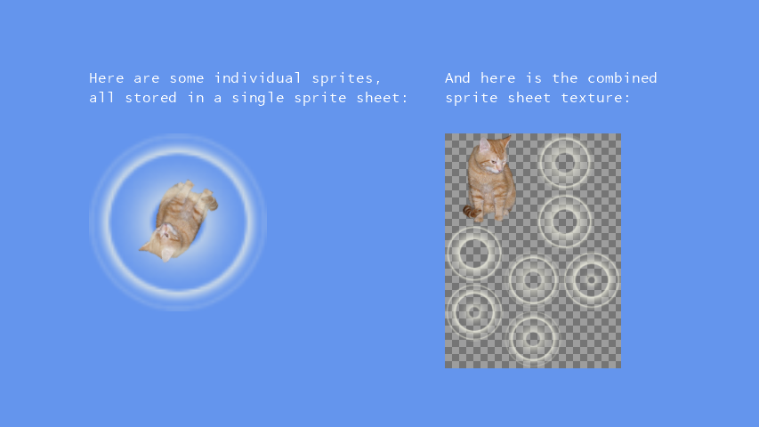

Sprite Sheet
Ported from Microsoft's XNA 4.0 Sprite Sheet Sample.
Source for this sample on GitHub ↗

Play ▸Opens in a new tab and runs in this browser. Click the canvas first so it receives the keyboard.
About this sample
This sample shows why a texture atlas is useful: the rotating cat and seven-frame glow animation on the left are eight individual sprites, but they all come from the single combined texture displayed on the right.
A sample-owned XNA Content Pipeline processor reads an XML list of source images, packs them into a 198 by 264 pixel sheet, and records each sprite's rectangle by name. One pixel of duplicated edge padding around every sprite prevents texture filtering from bleeding colours across neighbouring images.
The browser build consumes the original compiled XNA object graph directly. The checkerboard behind the atlas makes its transparent regions visible, while the animation demonstrates that independently addressed frames still draw normally after packing.
Controls
| Action | Keyboard | Gamepad |
|---|---|---|
| Exit | Esc | Back |
In the browser, exiting ends the sample rather than closing the tab.